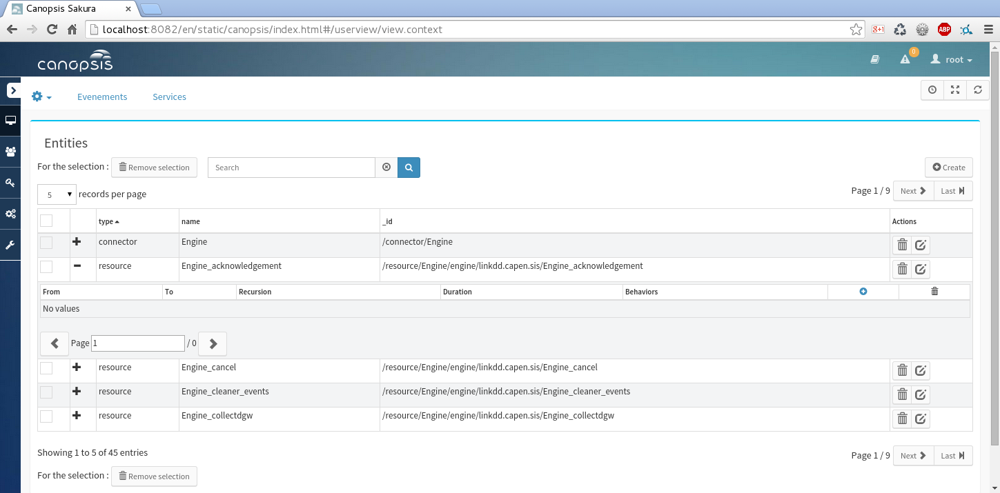
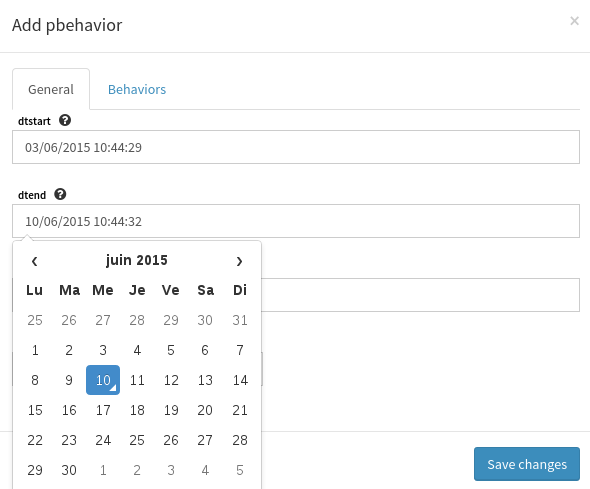
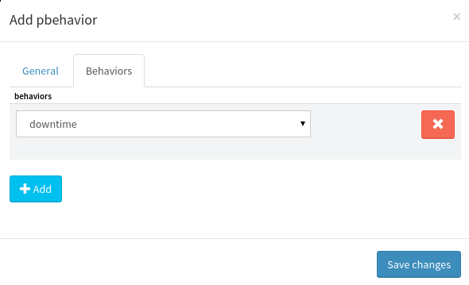
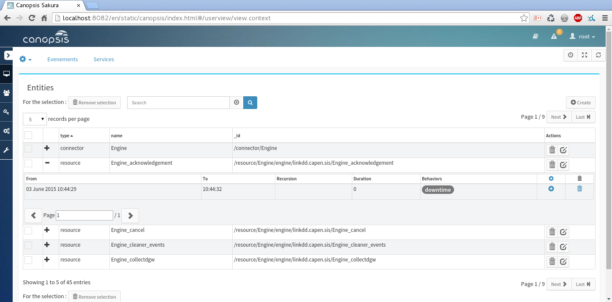
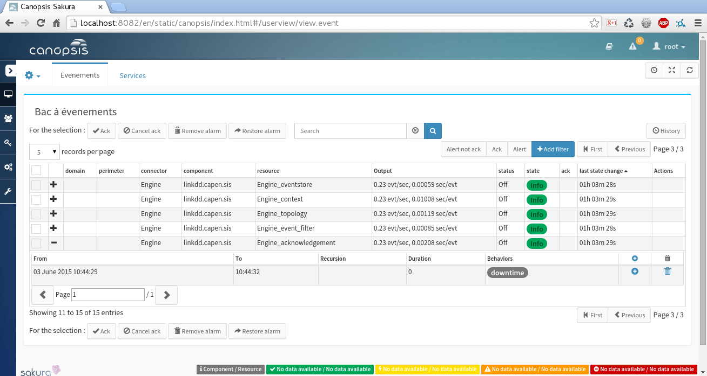

Using the view Context¶
This document describes what is a context, and how to manipulate it.
Introduction¶
In Canopsis, each event being processed contains contextual informations. We extract those informations in order to create an Entity.
The view Context allows you to see all detected entities.
..note:
Edition and suppression are ignored by the system. All modifications will be
erased by the next incoming event.
Periodic Behavior¶
An entity can have a defined behavior, which describes its actual state. The specified behavior will be configured with a period, and eventually a recursion.
Downtime¶
A downtime is set on an entity when we know that this entity will be “Down”. This situation can occur when you reboot a server, for example. The server will have an erroneous state, which will be ignored by Canopsis, during a short period of time.
Downtimes will exclude the associated check events from any selectors using it. Thus, the selector won’t be influenced by the fake erroneous state of the entity.
Because the event is excluded from the selector, the SLA will also exclude the same event from computations.
Disabled¶
Note
Not yet implemented
When an entity is set as disabled, it will be ignored by Canopsis. It means the associated events won’t appear in the following views:
- Event : each alerts from the entity will be ignored
- Selector : you won’t be able to include the event in a selector
- Context : new events will be missing from the context
How to use¶
By clicking on the + sign, you can unfold the Periodic Behavior Manager. This manager allows you to add/edit/remove a periodic behavior to an entity.
The + button in the table header allows you to add a periodic behavior:
 Then, all behaviors are listed with two possible actions: edit, and remove:
But periodic behaviors can be added directly via the view events:
